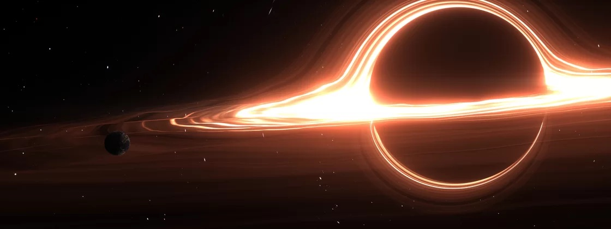

O Sol pode se transformar em um buraco negro? A ciência responde!

Apesar de parecer que vivemos em um universo 'infinito', a realidade é que tudo é finito, até o nosso Sol. De acordo com especialistas e astrônomos,
o processo de morte do Sol iniciará em aproximadamente cinco milhões de anos; a estrela queimará todo o seu 'combustível' interno e se transformar em uma gigante vermelha, até chegar a outras fases e, finalmente, se transmutar em uma anã branca.
Assim como o Sol surgiu em um belo dia cheio de poeira cósmica, ele também deixará de ser a principal estrela do nosso Sistema Solar — quando isso acontecer, provavelmente a humanidade não estará mais por aqui. Contudo,
muitos se questionam se o Sol pode se transformar em algo como um buraco negro.
A resposta é mais simples do que pode parecer:
não, o nosso sol não se transformará em um buraco negro daqui a alguns milhões de anos. Após finalizar a queima do hélio e se transformar em uma gigante vermelha, ela passará pelo processo de anã branca e, ao passar do tempo, ela esfriará e se transformará em uma anã negra. Assim, acabará o ciclo de vida do Sol — e se a humanidade ainda estiver por aqui na ocasião, não ficaremos por muito tempo após o início desse processo.
“É muito simples: o Sol não é pesado o suficiente para se tornar um buraco negro. Estrelas com massas iniciais superiores a cerca de 20 a 25 vezes a massa do nosso Sol têm potencial para sofrer o colapso gravitacional necessário para formar buracos negros”, disse o especialista em buracos negros, Xavier Calmete, que é professor de física da Universidade de Sussex, no Reino Unido, em mensagem enviada ao site Live Science.
Sol e buraco negro
A 'morte' do Sol começará quando a estrela esgotar seu estoque de hidrogênio e, assim, começará a utilizar o hélio como combustível. Inclusive, é possível que a estrela engula outros planetas nesse processo, incluindo a Terra. Contudo,
o Sol não entrará no estágio de fusão de ferro, considerada uma das etapas necessárias para um objeto cósmico massivo se tornar um buraco negro.
Leia também: O que aconteceria se a Terra se transformasse em um buraco negro?
Além disso, os cientistas explicam que
os buracos negros mais comuns são entre três e dez vezes mais pesados e até 100 vezes mais massivos que o nosso Sol. Ou seja, o Sol não é massivo o bastante — e mesmo se a estrela se transformasse em um buraco negro, provavelmente a humanidade não estará mais aqui para observar o fenômeno.
“O Sol precisaria ter cerca de 20 vezes mais massa para terminar a sua vida como buraco negro. Estrelas que nascem deste tamanho ou maiores podem explodir em supernovas no final de suas vidas antes de colapsarem novamente em um buraco negro, um objeto com uma atração gravitacional tão forte que nada, nem mesmo a luz, pode escapar… O Sol também não é grande o suficiente para este destino: tem apenas cerca de um décimo da massa necessária para eventualmente se tornar uma estrela de nêutrons”, a NASA explica em comunicado oficial.